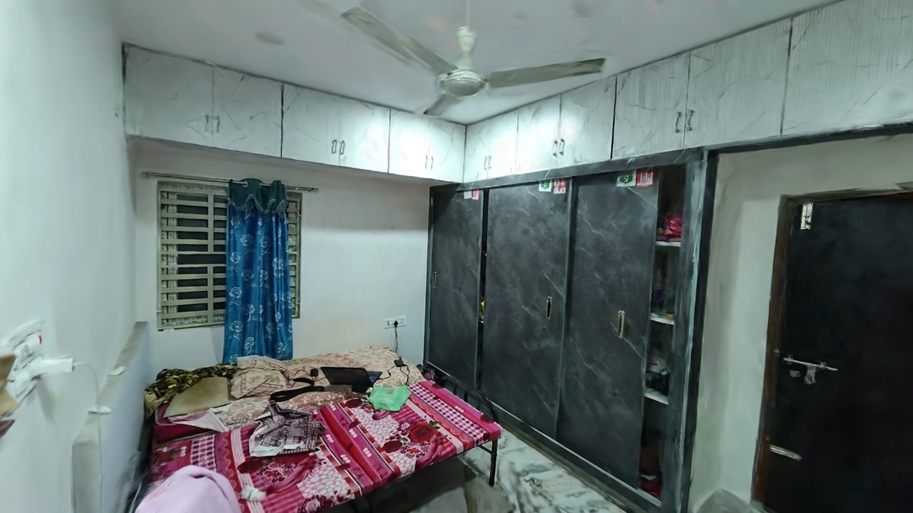

NammaSpace: Walkable Digital Twins of Indoor Spaces from a Single Phone Video
IIT Techfest 2026, NammaSpace challenge
NammaSpace rebuilds a real indoor space from one handheld phone video and lets a person walk through it in an ordinary web browser. The video is turned into a 3D Gaussian splat, a set of about half a million soft, coloured, translucent 3D Gaussians fitted to the real frames, so the room keeps its real colour, reflections and soft edges. A splat is not solid, so the system also builds a separate 10 cm collision grid from the scan itself, which stops the viewer at walls and furniture.
The pipeline picks the sharpest frame in every half second, recovers camera poses with COLMAP, fixes the floor and metric scale from the camera path, trains the splat with nerfstudio, then aligns, cleans and compresses it to a file of about 8 MB that a WebGL2 viewer streams and draws. On the Room scene (613 frames) it reaches a held-out PSNR of 27.14 dB, SSIM 0.913 and LPIPS 0.191 after 14 minutes of training on one GPU. The limits are stated plainly in the roadmap.
Demo video
Two minutes, from one phone video to walking through the room in a browser. Every viewer shot is a real screen recording.
Camera path and sparse reconstruction

Live demo
The Room scene running in your browser. Click inside the scene, then use W A S D to walk, Shift to run, Space to jump and Esc to free the mouse. Use the ⛶ button in the corner of the viewer for full screen. Open it full screen, or try the Hallway and Bedroom and the Early Bedroom.
Reconstructions



More views, the evaluation table, frame-rate measurements and the full list of experiments, including the ones that went wrong, are on the results page.
Method overview
Frames are chosen by sharpness, COLMAP solves a camera pose for each, and the camera path fixes the floor plane and a metric scale from an assumed phone height of 1.4 m. nerfstudio's splatfacto fits the Gaussians to the frames. The result is moved back into the metric world frame, cleaned of reflections that appear below the floor, sorted so the most important Gaussians come first, and compressed. The splat itself is a second, independent source of evidence, and it is combined with the camera-path map to produce the collision grid. Every step is described in the technical report.
Ongoing work
The next stage is points of interest (POIs): named places in a scene, such as a door, a bed or a window, placed on the same collision grid the live map already reads, together with a navigation method so a viewer can pick a place and be guided to it. We are also looking at an AI model to make reconstruction faster and more robust, a way to fill the areas the camera never saw, and an augmented reality view. Details are on the roadmap page.